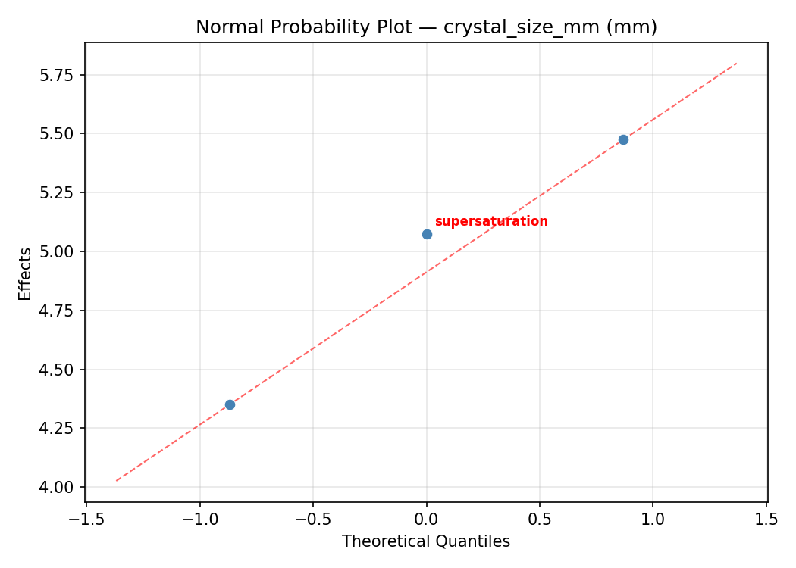
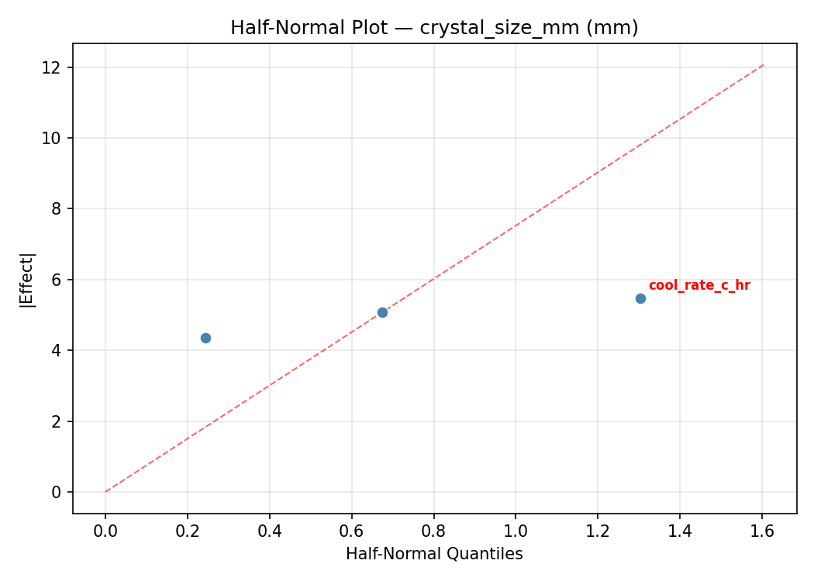
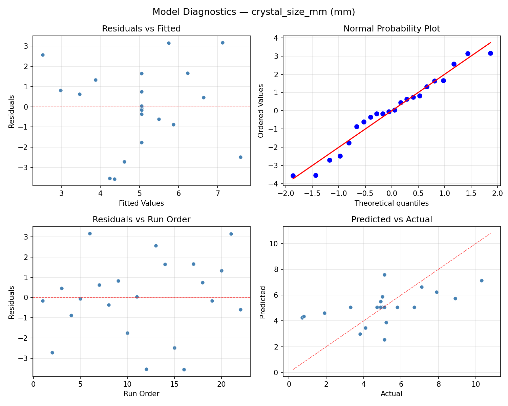
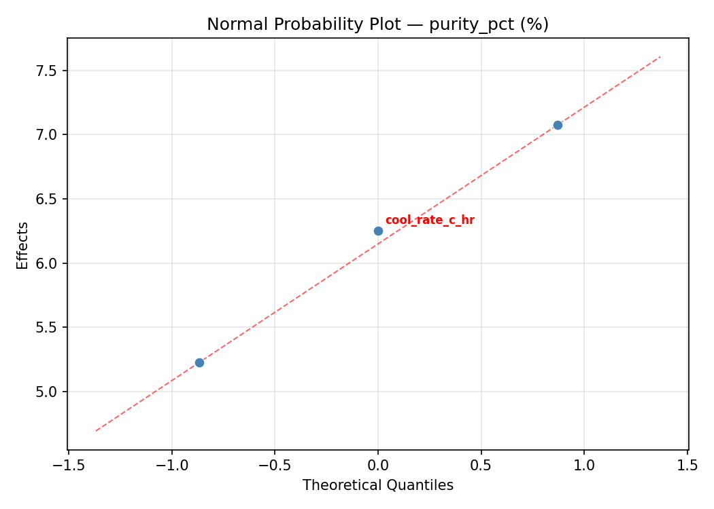
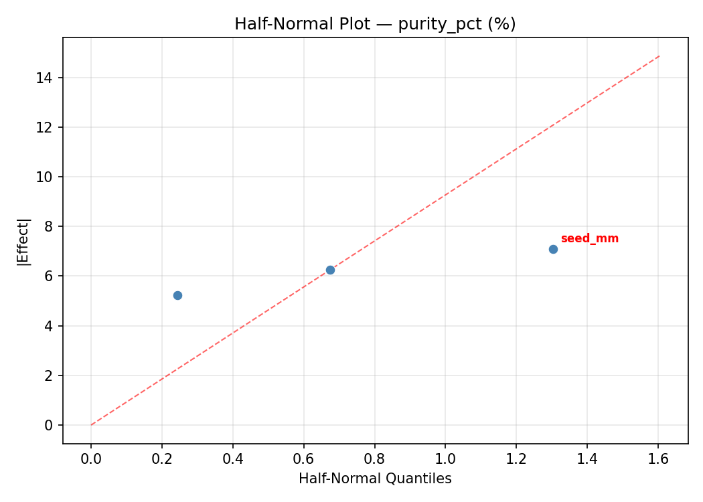
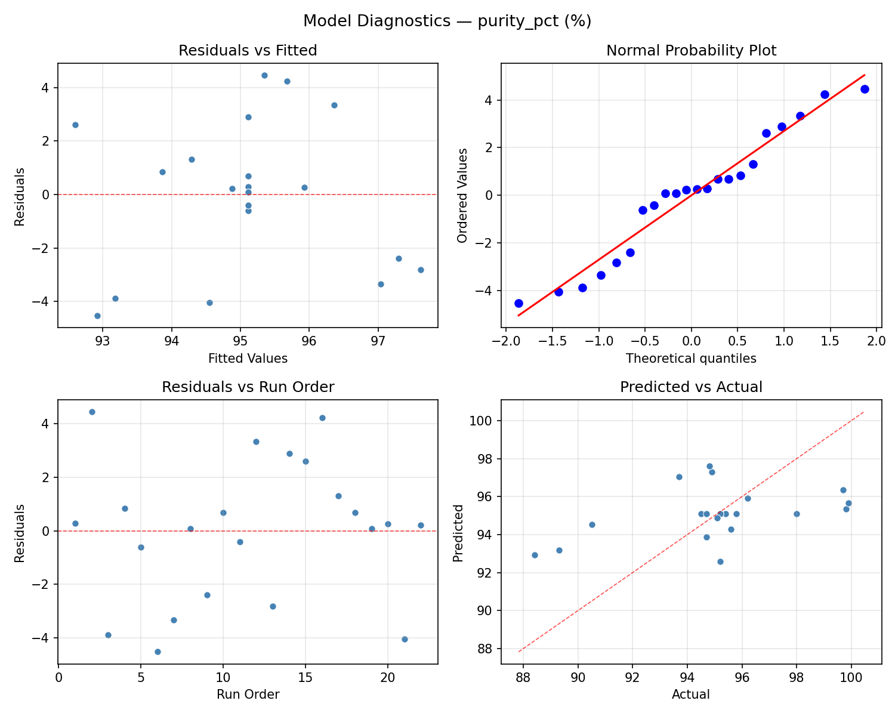

Summary
This experiment investigates crystal growth optimization. Central composite design to maximize crystal size and purity by tuning cooling rate, supersaturation, and seed crystal size.
The design varies 3 factors: cool rate c hr (C/hr), ranging from 0.5 to 5.0, supersaturation (ratio), ranging from 1.1 to 1.5, and seed mm (mm), ranging from 0.1 to 2.0. The goal is to optimize 2 responses: crystal size mm (mm) (maximize) and purity pct (%) (maximize). Fixed conditions held constant across all runs include solvent = water, compound = copper_sulfate.
A Central Composite Design (CCD) was selected to fit a full quadratic response surface model, including curvature and interaction effects. With 3 factors this produces 22 runs including center points and axial (star) points that extend beyond the factorial range.
Quadratic response surface models were fitted to capture potential curvature and factor interactions. The RSM contour plots below visualize how pairs of factors jointly affect each response.
Key Findings
For crystal size mm, the most influential factors were seed mm (40.1%), supersaturation (39.9%), cool rate c hr (19.9%). The best observed value was 10.3 (at cool rate c hr = 2.75, supersaturation = 1.3, seed mm = 1.05).
For purity pct, the most influential factors were cool rate c hr (36.0%), supersaturation (32.6%), seed mm (31.4%). The best observed value was 99.9 (at cool rate c hr = 0.5, supersaturation = 1.1, seed mm = 2).
Recommended Next Steps
- Run confirmation experiments at the predicted optimal settings to validate the model.
- Consider whether any fixed factors should be varied in a future study.
Experimental Setup
Factors
| Factor | Low | High | Unit |
|---|
cool_rate_c_hr | 0.5 | 5.0 | C/hr |
supersaturation | 1.1 | 1.5 | ratio |
seed_mm | 0.1 | 2.0 | mm |
Fixed: solvent = water, compound = copper_sulfate
Responses
| Response | Direction | Unit |
|---|
crystal_size_mm | ↑ maximize | mm |
purity_pct | ↑ maximize | % |
Configuration
{
"metadata": {
"name": "Crystal Growth Optimization",
"description": "Central composite design to maximize crystal size and purity by tuning cooling rate, supersaturation, and seed crystal size"
},
"factors": [
{
"name": "cool_rate_c_hr",
"levels": [
"0.5",
"5.0"
],
"type": "continuous",
"unit": "C/hr"
},
{
"name": "supersaturation",
"levels": [
"1.1",
"1.5"
],
"type": "continuous",
"unit": "ratio"
},
{
"name": "seed_mm",
"levels": [
"0.1",
"2.0"
],
"type": "continuous",
"unit": "mm"
}
],
"fixed_factors": {
"solvent": "water",
"compound": "copper_sulfate"
},
"responses": [
{
"name": "crystal_size_mm",
"optimize": "maximize",
"unit": "mm"
},
{
"name": "purity_pct",
"optimize": "maximize",
"unit": "%"
}
],
"settings": {
"operation": "central_composite",
"test_script": "use_cases/188_crystallization/sim.sh"
}
}
Experimental Matrix
The Central Composite Design produces 22 runs. Each row is one experiment with specific factor settings.
| Run | cool_rate_c_hr | supersaturation | seed_mm |
|---|
| 1 | 2.75 | 1.3 | 1.05 |
| 2 | 5 | 1.1 | 2 |
| 3 | 0.5 | 1.5 | 0.1 |
| 4 | 2.75 | 1.66515 | 1.05 |
| 5 | 2.75 | 1.3 | 1.05 |
| 6 | -1.35792 | 1.3 | 1.05 |
| 7 | 2.75 | 1.3 | -0.684455 |
| 8 | 2.75 | 1.3 | 1.05 |
| 9 | 5 | 1.5 | 0.1 |
| 10 | 6.85792 | 1.3 | 1.05 |
| 11 | 2.75 | 1.3 | 1.05 |
| 12 | 2.75 | 0.934852 | 1.05 |
| 13 | 2.75 | 1.3 | 1.05 |
| 14 | 0.5 | 1.1 | 2 |
| 15 | 2.75 | 1.3 | 1.05 |
| 16 | 5 | 1.1 | 0.1 |
| 17 | 2.75 | 1.3 | 2.78445 |
| 18 | 5 | 1.5 | 2 |
| 19 | 2.75 | 1.3 | 1.05 |
| 20 | 0.5 | 1.1 | 0.1 |
| 21 | 0.5 | 1.5 | 2 |
| 22 | 2.75 | 1.3 | 1.05 |
Step-by-Step Workflow
1
Preview the design
$ python doe.py info --config use_cases/188_crystallization/config.json
2
Generate the runner script
$ python doe.py generate --config use_cases/188_crystallization/config.json \
--output use_cases/188_crystallization/results/run.sh --seed 42
3
Execute the experiments
$ bash use_cases/188_crystallization/results/run.sh
4
Analyze results
$ python doe.py analyze --config use_cases/188_crystallization/config.json
5
Get optimization recommendations
$ python doe.py optimize --config use_cases/188_crystallization/config.json
6
Multi-objective optimization
With 2 competing responses, use --multi to find the best compromise via Derringer–Suich desirability.
$ python doe.py optimize --config use_cases/188_crystallization/config.json --multi
7
Generate the HTML report
$ python doe.py report --config use_cases/188_crystallization/config.json \
--output use_cases/188_crystallization/results/report.html
Features Exercised
| Feature | Value |
|---|
| Design type | central_composite |
| Factor types | continuous (all 3) |
| Arg style | double-dash |
| Responses | 2 (crystal_size_mm ↑, purity_pct ↑) |
| Total runs | 22 |
Analysis Results
Generated from actual experiment runs using the DOE Helper Tool.
Response: crystal_size_mm
Top factors: seed_mm (40.1%), supersaturation (39.9%), cool_rate_c_hr (19.9%).
ANOVA
| Source | DF | SS | MS | F | p-value |
|---|
| Source | DF | SS | MS | F | p-value |
| cool_rate_c_hr | 4 | 9.7929 | 2.4482 | 0.427 | 0.7856 |
| supersaturation | 4 | 21.4220 | 5.3555 | 0.935 | 0.4858 |
| seed_mm | 4 | 21.9995 | 5.4999 | 0.960 | 0.4739 |
| Lack | of | Fit | 2 | 17.3513 | 8.6757 |
| Pure | Error | 7 | 40.0888 | | |
| Error | 9 | 57.4401 | 5.7270 | | |
| Total | 21 | 110.6545 | 5.2693 | | |
Pareto Chart

Main Effects Plot

Normal Probability Plot of Effects

Half-Normal Plot of Effects

Model Diagnostics

Response: purity_pct
Top factors: cool_rate_c_hr (36.0%), supersaturation (32.6%), seed_mm (31.4%).
ANOVA
| Source | DF | SS | MS | F | p-value |
|---|
| Source | DF | SS | MS | F | p-value |
| cool_rate_c_hr | 4 | 43.1940 | 10.7985 | 0.956 | 0.4760 |
| supersaturation | 4 | 29.2915 | 7.3229 | 0.648 | 0.6422 |
| seed_mm | 4 | 27.0840 | 6.7710 | 0.599 | 0.6726 |
| Lack | of | Fit | 2 | 1.0699 | 0.5349 |
| Pure | Error | 7 | 79.0787 | | |
| Error | 9 | 80.1486 | 11.2970 | | |
| Total | 21 | 179.7182 | 8.5580 | | |
Pareto Chart

Main Effects Plot

Normal Probability Plot of Effects

Half-Normal Plot of Effects

Model Diagnostics

Response Surface Plots
3D surfaces fitted with quadratic RSM. Red dots are observed data points.
crystal size mm cool rate c hr vs seed mm

crystal size mm cool rate c hr vs supersaturation

crystal size mm supersaturation vs seed mm

purity pct cool rate c hr vs seed mm

purity pct cool rate c hr vs supersaturation

purity pct supersaturation vs seed mm

Multi-Objective Optimization
When responses compete, Derringer–Suich desirability finds the best compromise.
Each response is scaled to a 0–1 desirability, then combined via a weighted geometric mean.
Overall Desirability
D = 0.7350
Per-Response Desirability
| Response | Weight | Desirability | Predicted | Dir |
|---|
crystal_size_mm |
1.0 |
|
6.70 0.6136 6.70 mm |
↑ |
purity_pct |
2.0 |
|
98.00 0.8043 98.00 % |
↑ |
Recommended Settings
| Factor | Value |
|---|
cool_rate_c_hr | 5 C/hr |
supersaturation | 1.1 ratio |
seed_mm | 0.1 mm |
Source: from observed run #14
Trade-off Summary
Sacrifice = how much worse than single-objective best.
| Response | Predicted | Best Observed | Sacrifice |
|---|
purity_pct | 98.00 | 99.90 | +1.90 |
Top 3 Runs by Desirability
| Run | D | Factor Settings |
|---|
| #17 | 0.6501 | cool_rate_c_hr=5, supersaturation=1.5, seed_mm=2 |
| #18 | 0.5944 | cool_rate_c_hr=0.5, supersaturation=1.1, seed_mm=0.1 |
Model Quality
| Response | R² | Type |
|---|
purity_pct | 0.0752 | linear |
Full Multi-Objective Output
============================================================
MULTI-OBJECTIVE OPTIMIZATION
Method: Derringer-Suich Desirability Function
============================================================
Overall desirability: D = 0.7350
Response Weight Desirability Predicted Direction
---------------------------------------------------------------------
crystal_size_mm 1.0 0.6136 6.70 mm ↑
purity_pct 2.0 0.8043 98.00 % ↑
Recommended settings:
cool_rate_c_hr = 5 C/hr
supersaturation = 1.1 ratio
seed_mm = 0.1 mm
(from observed run #14)
Trade-off summary:
crystal_size_mm: 6.70 (best observed: 10.30, sacrifice: +3.60)
purity_pct: 98.00 (best observed: 99.90, sacrifice: +1.90)
Model quality:
crystal_size_mm: R² = 0.0123 (linear)
purity_pct: R² = 0.0752 (linear)
Top 3 observed runs by overall desirability:
1. Run #14 (D=0.7350): cool_rate_c_hr=5, supersaturation=1.1, seed_mm=0.1
2. Run #17 (D=0.6501): cool_rate_c_hr=5, supersaturation=1.5, seed_mm=2
3. Run #18 (D=0.5944): cool_rate_c_hr=0.5, supersaturation=1.1, seed_mm=0.1
Full Analysis Output
=== Main Effects: crystal_size_mm ===
Factor Effect Std Error % Contribution
--------------------------------------------------------------
seed_mm 5.1750 0.4894 40.1%
supersaturation 5.1500 0.4894 39.9%
cool_rate_c_hr 2.5667 0.4894 19.9%
=== ANOVA Table: crystal_size_mm ===
Source DF SS MS F p-value
-----------------------------------------------------------------------------
cool_rate_c_hr 4 9.7929 2.4482 0.427 0.7856
supersaturation 4 21.4220 5.3555 0.935 0.4858
seed_mm 4 21.9995 5.4999 0.960 0.4739
Lack of Fit 2 17.3513 8.6757 1.515 0.2840
Pure Error 7 40.0888 5.7270
Error 9 57.4401 5.7270
Total 21 110.6545 5.2693
=== Summary Statistics: crystal_size_mm ===
cool_rate_c_hr:
Level N Mean Std Min Max
------------------------------------------------------------
-1.35792 1 5.1000 0.0000 5.1000 5.1000
0.5 4 5.7250 2.3557 3.3000 8.9000
2.75 12 4.5333 2.6123 0.7000 10.3000
5 4 5.4250 1.7462 3.8000 7.9000
6.85792 1 7.1000 0.0000 7.1000 7.1000
supersaturation:
Level N Mean Std Min Max
------------------------------------------------------------
0.934852 1 0.8000 0.0000 0.8000 0.8000
1.1 4 5.2000 2.0992 3.3000 7.9000
1.3 12 5.0750 2.4193 0.7000 10.3000
1.5 4 5.9500 1.9689 4.9000 8.9000
1.66515 1 4.9000 0.0000 4.9000 4.9000
seed_mm:
Level N Mean Std Min Max
------------------------------------------------------------
-0.684455 1 0.7000 0.0000 0.7000 0.7000
0.1 4 5.8750 1.4151 4.9000 7.9000
1.05 12 5.1000 2.4008 0.8000 10.3000
2 4 5.2750 2.5329 3.3000 8.9000
2.78445 1 4.7000 0.0000 4.7000 4.7000
=== Main Effects: purity_pct ===
Factor Effect Std Error % Contribution
--------------------------------------------------------------
cool_rate_c_hr 6.5667 0.6237 36.0%
supersaturation 5.9500 0.6237 32.6%
seed_mm 5.7250 0.6237 31.4%
=== ANOVA Table: purity_pct ===
Source DF SS MS F p-value
-----------------------------------------------------------------------------
cool_rate_c_hr 4 43.1940 10.7985 0.956 0.4760
supersaturation 4 29.2915 7.3229 0.648 0.6422
seed_mm 4 27.0840 6.7710 0.599 0.6726
Lack of Fit 2 1.0699 0.5349 0.047 0.9541
Pure Error 7 79.0787 11.2970
Error 9 80.1486 11.2970
Total 21 179.7182 8.5580
=== Summary Statistics: purity_pct ===
cool_rate_c_hr:
Level N Mean Std Min Max
------------------------------------------------------------
-1.35792 1 94.8000 0.0000 94.8000 94.8000
0.5 4 94.3250 2.5656 90.5000 95.8000
2.75 12 95.8667 3.2508 88.4000 99.9000
5 4 95.1500 0.4203 94.7000 95.6000
6.85792 1 89.3000 0.0000 89.3000 89.3000
supersaturation:
Level N Mean Std Min Max
------------------------------------------------------------
0.934852 1 99.9000 0.0000 99.9000 99.9000
1.1 4 95.5250 0.4272 94.9000 95.8000
1.3 12 94.9583 3.4870 88.4000 99.8000
1.5 4 93.9500 2.3188 90.5000 95.4000
1.66515 1 95.1000 0.0000 95.1000 95.1000
seed_mm:
Level N Mean Std Min Max
------------------------------------------------------------
-0.684455 1 99.7000 0.0000 99.7000 99.7000
0.1 4 95.5000 0.2582 95.2000 95.8000
1.05 12 94.9667 3.5116 88.4000 99.9000
2 4 93.9750 2.3656 90.5000 95.8000
2.78445 1 95.2000 0.0000 95.2000 95.2000
Optimization Recommendations
=== Optimization: crystal_size_mm ===
Direction: maximize
Best observed run: #6
cool_rate_c_hr = 2.75
supersaturation = 1.3
seed_mm = 1.05
Value: 10.3
RSM Model (linear, R² = 0.1662, Adj R² = 0.0273):
Coefficients:
intercept +5.0545
cool_rate_c_hr +0.1716
supersaturation +0.7621
seed_mm -0.8024
RSM Model (quadratic, R² = 0.4307, Adj R² = 0.0038):
Coefficients:
intercept +5.6638
cool_rate_c_hr +0.1716
supersaturation +0.7621
seed_mm -0.8024
cool_rate_c_hr*supersaturation -0.6875
cool_rate_c_hr*seed_mm +0.0375
supersaturation*seed_mm +0.9625
cool_rate_c_hr^2 -0.1946
supersaturation^2 +0.1804
seed_mm^2 -0.8996
Curvature analysis:
seed_mm coef=-0.8996 concave (has a maximum)
cool_rate_c_hr coef=-0.1946 concave (has a maximum)
supersaturation coef=+0.1804 convex (has a minimum)
Notable interactions:
supersaturation*seed_mm coef=+0.9625 (synergistic)
cool_rate_c_hr*supersaturation coef=-0.6875 (antagonistic)
Predicted optimum (from linear model, at observed points):
cool_rate_c_hr = 5
supersaturation = 1.5
seed_mm = 0.1
Predicted value: 6.7906
Surface optimum (via L-BFGS-B, linear model):
cool_rate_c_hr = 5
supersaturation = 1.5
seed_mm = 0.1
Predicted value: 6.7906
Model quality: Weak fit — consider adding center points or using a different design.
Factor importance:
1. seed_mm (effect: 5.0, contribution: 50.1%)
2. supersaturation (effect: 4.0, contribution: 39.8%)
3. cool_rate_c_hr (effect: 1.0, contribution: 10.2%)
=== Optimization: purity_pct ===
Direction: maximize
Best observed run: #16
cool_rate_c_hr = 0.5
supersaturation = 1.1
seed_mm = 2
Value: 99.9
RSM Model (linear, R² = 0.1288, Adj R² = -0.0164):
Coefficients:
intercept +95.1091
cool_rate_c_hr -0.7390
supersaturation -0.0228
seed_mm +1.0158
RSM Model (quadratic, R² = 0.3921, Adj R² = -0.0638):
Coefficients:
intercept +93.5762
cool_rate_c_hr -0.7390
supersaturation -0.0228
seed_mm +1.0158
cool_rate_c_hr*supersaturation +0.2125
cool_rate_c_hr*seed_mm -1.2375
supersaturation*seed_mm -0.0125
cool_rate_c_hr^2 +0.5664
supersaturation^2 +0.5814
seed_mm^2 +1.1515
Curvature analysis:
seed_mm coef=+1.1515 convex (has a minimum)
supersaturation coef=+0.5814 convex (has a minimum)
cool_rate_c_hr coef=+0.5664 convex (has a minimum)
Notable interactions:
cool_rate_c_hr*seed_mm coef=-1.2375 (antagonistic)
Predicted optimum (from linear model, at observed points):
cool_rate_c_hr = 2.75
supersaturation = 1.3
seed_mm = 2.78445
Predicted value: 96.9637
Surface optimum (via L-BFGS-B, linear model):
cool_rate_c_hr = 0.5
supersaturation = 1.1
seed_mm = 2
Predicted value: 96.8867
Model quality: Weak fit — consider adding center points or using a different design.
Factor importance:
1. seed_mm (effect: 5.5, contribution: 59.0%)
2. cool_rate_c_hr (effect: 2.4, contribution: 25.4%)
3. supersaturation (effect: 1.5, contribution: 15.6%)